Hẹp Môn Vị
Nguồn: Xray.vn — xray.vn/hep-mon-vi
I. Đại cương
– Hẹp môn vị (Pyloric stenosis) hay tắc nghẽn đường ra dạ dày (Gastric outlet obstruction) là hội chứng ứ đọng dịch và thức ăn trong dạ dày do tắc nghẽn cơ học hoặc rối loạn chức năng vùng hang vị, ống môn vị và hành tá tràng.
– Dịch tễ: Phổ biến nhất ở hai nhóm đối tượng gồm trẻ nhũ nhi mắc hẹp phì đại môn vị (tỷ lệ gặp ở trẻ trai gấp 4 lần trẻ gái) và người trưởng thành có tiền sử loét dạ dày – tá tràng hoặc bệnh lý ác tính vùng hang môn vị – đầu tụy.
– Căn nguyên: Bao gồm nhóm nguyên nhân bẩm sinh ở trẻ nhỏ và nhóm nguyên nhân mắc phải lành tính hoặc ác tính ở người lớn:
+ Bẩm sinh: Hẹp phì đại môn vị ở trẻ nhũ nhi (Infantile hypertrophic pyloric stenosis) chiếm đa số trường hợp ở lứa tuổi 2–12 tuần, ngoài ra có màng ngăn môn vị hoặc tụy lạc chỗ.
+ Lành tính ở người lớn: Biến chứng của bệnh loét dạ dày – tá tràng mạn tính, sẹo xơ sau bỏng hóa chất, polyp lớn vùng hang vị sa vào ống môn vị hoặc hội chứng Bouveret do sỏi mật kẹt hành tá tràng.
+ Ác tính ở người lớn: Ung thư biểu mô tuyến vùng hang môn vị dạ dày, ung thư đầu tụy, ung thư bóng Vater hoặc khối hạch di căn chèn ép từ bên ngoài.
– Cơ chế bệnh sinh: Tình trạng chít hẹp đường thoát dạ dày diễn tiến theo hai giai đoạn từ còn bù sang mất bù cơ học và rối loạn toàn thân:
+ Giai đoạn hẹp cơ năng hoặc bán tắc: Phù nề niêm mạc cấp tính, co thắt cơ trơn do ổ loét vùng môn vị – hành tá tràng hoặc phì đại lớp cơ vòng làm tăng kháng lực dòng chảy, kích thích dạ dày tăng sóng nhu động để tống thoát dịch.
+ Giai đoạn hẹp thực thể và mất bù: Tổ chức xơ sẹo co kéo vĩnh viễn hoặc khối u xâm lấn gây bít tắc lòng ống môn vị, làm cơ thành dạ dày suy kiệt, giãn lớn và mất trương lực co bóp.
+ Rối loạn nội môi: Nôn ói kéo dài dịch vị giàu ion hydro và clo dẫn đến mất nước nặng, hạ kali máu và kiềm chuyển hóa giảm clo máu.
– Biểu hiện lâm sàng: Tiến triển từ đau tức thượng vị sau ăn kèm nôn dịch vị sang nôn ra thức ăn cũ chưa tiêu hóa của ngày hôm trước, dấu hiệu lắc óc ách lúc đói và hình ảnh sóng nhu động dạ dày nổi rõ trên thành bụng.
– Vai trò CĐHA: Giữ vai trò cốt lõi trong chẩn đoán xác định, phân biệt nguyên nhân và định hướng điều trị:
+ Siêu âm là phương tiện hàng đầu chẩn đoán hẹp phì đại môn vị ở trẻ nhỏ nhờ đánh giá trực tiếp bề dày lớp cơ và chiều dài ống môn vị mà không nhiễm xạ.
+ Chụp X-quang lưu thông dạ dày – tá tràng đánh giá mức độ giãn dạ dày, hình thái ống môn vị và mức độ ứ đọng thuốc cản quang theo thời gian.
+ Cắt lớp vi tính có tiêm thuốc cản quang đánh giá toàn diện nguyên nhân gây hẹp ở người lớn, phân biệt loét xơ chai lành tính với tổn thương ác tính xâm lấn hoặc chèn ép ngoài ống tiêu hóa.
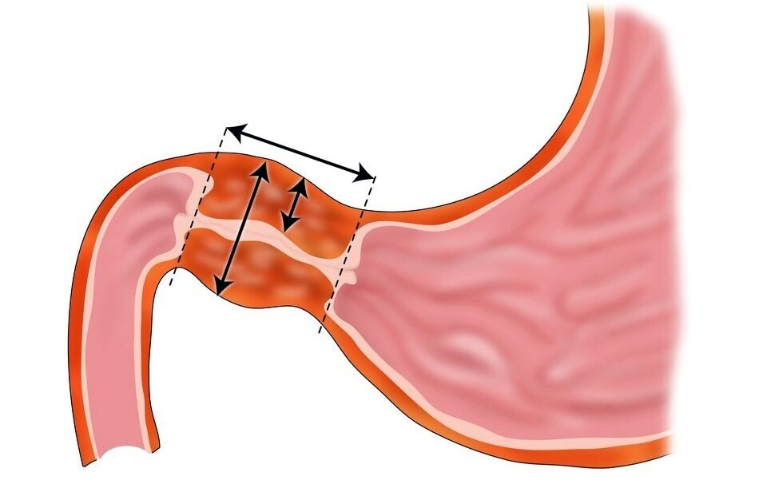
© Chẩn Đoán Hình Ảnh Xray.vn
II. Lâm sàng
1. Tiền sử
– Tiền sử loét dạ dày – tá tràng tiến triển nhiều năm với các đợt đau thượng vị có chu kỳ.
– Bệnh cảnh hẹp môn vị cấp tính khởi phát rầm rộ do phù nề và co thắt mạnh quanh ổ loét đang hoạt động nằm sát lỗ môn vị.
– Nhóm nguyên nhân khác: Tiền sử sụt cân nhanh, chán ăn ở người lớn tuổi gợi ý bệnh lý ác tính vùng hang môn vị – đầu tụy, hoặc khởi phát nôn vọt không dịch mật ở trẻ nhũ nhi 2–12 tuần tuổi gợi ý hẹp phì đại môn vị.
2. Giai đoạn đầu
* Lâm sàng
– Triệu chứng cơ năng: Đau vùng thượng vị xuất hiện sớm sau bữa ăn kèm cảm giác đầy bụng, chướng hơi và ậm ạch khó tiêu.
– Biểu hiện nôn: Nôn ra dịch vị lẫn thức ăn mới ăn, sau nôn giảm đau nhanh, giai đoạn này chưa có dấu hiệu suy kiệt hay mất nước toàn thân.
* Nội soi
– Dạ dày ứ đọng nhẹ lượng dịch vị trong lòng hang vị nhưng chưa giãn kích thước.
– Vùng hang môn vị viêm xung huyết, phù nề làm lỗ môn vị co thắt hẹp, tuy nhiên ống soi vẫn qua được.
– Tổn thương nguyên phát thường gặp là ổ loét bờ gồ cao, đáy sâu trên nền niêm mạc phù nề đỏ.
3. Giai đoạn tiến triển
* Lâm sàng
– Triệu chứng cơ năng: Đau thượng vị xuất hiện muộn 2–3 giờ sau ăn thành từng cơn liên tiếp do dạ dày tăng co bóp thắng kháng lực, kèm nôn ngày càng nhiều dịch ứ đọng màu xanh rêu lẫn thức ăn cũ của ngày hôm trước và giảm đau rõ sau khi nôn.
– Khám thực thể:
+ Dấu hiệu lắc óc ách lúc đói: Nghe tiếng dịch va đập trong dạ dày khi lắc bụng vào buổi sáng sớm lúc chưa ăn uống.
+ Dấu hiệu sóng nhu động (Kussmaul): Thấy các đợt sóng co bóp dạ dày nổi gồ trên thành bụng, di chuyển từ vùng hạ sườn trái sang phải hướng về vùng môn vị.
+ Dấu hiệu Bouveret: Đặt bàn tay lên vùng thượng vị cảm nhận khối căng cứng xuất hiện từng lúc theo nhịp co bóp của dạ dày, trong khi vùng bụng dưới xẹp và lõm hình lòng thuyền.
– Toàn thân: Da khô, giảm đàn hồi, tiểu ít và bắt đầu có biểu hiện mất nước kèm rối loạn điện giải.
* Nội soi
– Dạ dày giãn nhẹ đến vừa, ứ đọng nhiều dịch bẩn và cặn thức ăn cũ chưa tiêu hóa.
– Niêm mạc hang môn vị phù nề dày, lỗ môn vị chít hẹp nhỏ, khó hoặc không đưa được ống soi tiêu chuẩn đi qua.
– Trường hợp ổ loét xơ chai nằm ở hành tá tràng hoặc sau hành tá tràng, lỗ môn vị có thể mở rộng và hành tá tràng phía trên chỗ hẹp giãn lớn.
4. Giai đoạn muộn
* Lâm sàng
– Triệu chứng cơ năng: Đau thượng vị giảm hẳn hoặc chuyển sang cảm giác căng tức âm ỉ liên tục, tần suất nôn thưa hơn nhưng mỗi lần nôn số lượng rất lớn ra thức ăn cũ ứ đọng từ 2–3 ngày trước có mùi hôi thối.
– Khám thực thể:
+ Dạ dày giãn cực đại sa xuống thấp quá đường nối hai mào chậu làm bụng trên chướng căng.
+ Dấu hiệu lắc óc ách lúc đói rõ rệt nhưng không còn quan sát thấy sóng nhu động do cơ thành dạ dày đã suy kiệt và mất hoàn toàn trương lực co bóp.
– Toàn thân: Suy kiệt nặng, mất nước rõ rệt, kiềm chuyển hóa giảm clo máu, hạ kali máu và có thể xuất hiện cơn co giật tetani do hạ canxi ion hóa.
* Nội soi
– Dạ dày giãn rất lớn, thành mỏng, ứ đọng lượng lớn dịch màu nâu đen và cặn thức ăn phân hủy.
– Lỗ môn vị bị chít hẹp khít hoàn toàn do tổ chức xơ sẹo hoặc khối u xâm lấn, không thể đưa ống soi qua được.
– Niêm mạc dạ dày viêm phù nề lan tỏa, xung huyết và dễ chảy máu do ứ trệ kéo dài.
III. Chẩn đoán x-quang
* Giai đoạn đầu
– Đặc điểm hình ảnh: Dạ dày bắt đầu giãn nhẹ do ứ đọng dịch tiết và thức ăn, đi kèm tăng sóng nhu động tống thoát từng đợt nhằm thắng kháng lực qua lỗ môn vị:
+ Trên phim chụp X-quang bụng không chuẩn bị tư thế đứng, bóng hơi dạ dày giãn nhẹ với mức dịch – hơi khu trú ở vùng hạ sườn trái nhưng đáy vị chưa sa thấp quá đường nối hai mào chậu.
+ Trên phim chụp X-quang lưu thông dạ dày – tá tràng có uống thuốc cản quang, quan sát thấy các sóng nhu động sâu và mạnh chạy dọc bờ cong lớn và bờ cong nhỏ hướng về vùng hang môn vị theo từng đợt.
+ Lòng ống môn vị và hành tá tràng biến dạng, co thắt hẹp hoặc có hình ảnh ổ đọng thuốc (ổ loét) kèm phù nề nếp niêm mạc xung quanh, nhưng thuốc cản quang vẫn qua được tá tràng trong thời gian gần bình thường.
+ Dấu hiệu kích thích tăng nhu động từng đợt (còn gọi là dấu hiệu sâu bò trên màn tăng sáng) giúp phân biệt giai đoạn hẹp còn bù với tình trạng liệt dạ dày mất trương lực ở giai đoạn muộn.

=> Case lâm sàng 1:


=> Case lâm sàng 2:
* Giai đoạn tiến triển
– Đặc điểm hình ảnh: Dạ dày giãn lớn rõ rệt kèm đáy vị sa thấp và giảm dần sóng nhu động tống thoát:
+ Trên phim chụp X-quang bụng không chuẩn bị tư thế đứng, bóng hơi dạ dày giãn rộng chiếm phần lớn nửa bụng trên và đáy vị sa thấp ngang hoặc ngay dưới đường nối hai mào chậu.
+ Lòng dạ dày chứa lượng lớn dịch ứ đọng và cặn thức ăn tạo hình ảnh mức dịch – hơi rộng ngay cả khi bệnh nhân nhịn đói qua đêm.
+ Trên màn tăng sáng và phim chụp lưu thông dạ dày – tá tràng, các sóng nhu động nông, thưa thớt và kém hiệu quả, xen kẽ những khoảng nghỉ dài do cơ thành dạ dày bắt đầu suy kiệt.
+ Vùng hang môn vị – hành tá tràng chít hẹp khít, thuốc cản quang đi qua rất chậm và nhỏ giọt, phản ánh chuyển tiếp từ giai đoạn tăng co bóp còn bù sang suy giảm trương lực.


– Chụp X-quang lưu thông dạ dày – tá tràng tư thế đứng cho thấy hình ảnh phân lớp ba tầng đặc trưng và tình trạng chậm làm rỗng dạ dày rõ rệt:
+ Dấu hiệu phân lớp ba mức cản quang: Trong lòng dạ dày giãn lớn xuất hiện ba tầng tách biệt từ thấp lên cao gồm lớp thuốc cản quang bari tỷ trọng cao lắng đọng ở đáy vị, lớp dịch vị và thức ăn ứ đọng ở giữa có độ mờ trung gian và túi hơi dạ dày ở trên cùng.
+ Dấu hiệu chậm tống thoát thuốc cản quang: Trên phim chụp kiểm tra muộn sau 6–12 giờ vẫn còn tồn đọng phần lớn lượng thuốc cản quang bari trong lòng dạ dày, xác nhận tình trạng bít tắc thực thể đường thoát dạ dày và phân biệt với chứng liệt dạ dày cơ năng thoáng qua.


– Trên màn tăng sáng khi bắt đầu cho bệnh nhân uống thuốc cản quang bari tư thế đứng, xuất hiện dấu hiệu tuyết rơi do chênh lệch tỷ trọng giữa dịch ứ đọng và thuốc cản quang:
+ Cơ chế và hình thái: Những ngụm thuốc cản quang bari tỷ trọng cao không chảy thành dòng liên tục xuống đáy vị mà phân tán thành các hạt hoặc đám nhỏ lơ lửng, rơi từ từ qua lớp dịch vị và thức ăn cũ ứ đọng dày đặc để lắng xuống đáy dạ dày.
+ Ý nghĩa chẩn đoán: Khẳng định tình trạng ứ đọng dịch lượng lớn trong lòng dạ dày ngay từ thì đầu của cuộc chiếu mà không cần chờ đến phim chụp đánh giá tồn đọng muộn.
+ Cạm bẫy kỹ thuật: Lớp dịch và thức ăn ứ đọng làm pha loãng thuốc cản quang bari và che lấp chi tiết bề mặt niêm mạc, dễ gây bỏ sót ổ loét nhỏ hoặc tổn thương sùi loét vùng hang môn vị nếu không hút rửa dạ dày trước khi chụp.
* Giai đoạn muộn
– Dạ dày mất hoàn toàn trương lực cơ, giãn cực đại chiếm phần lớn ổ bụng và đình trệ lưu thông gần như tuyệt đối:
+ Dấu hiệu dạ dày hình đáy chậu: Trên phim chụp tư thế đứng, dạ dày giãn to cả chiều ngang lẫn chiều dọc, đáy vị sa thấp xuống tận hố chậu vượt quá đường nối hai mào chậu, tạo hình ảnh túi chứa dịch – hơi khổng lồ nằm vắt ngang tiểu khung.
+ Dấu hiệu mất sóng nhu động: Trên màn tăng sáng không còn quan sát thấy các sóng co bóp tống thoát hướng về vùng hang môn vị do cơ thành dạ dày đã suy kiệt hoàn toàn, thuốc cản quang bari rơi tự do xuống đáy vị và nằm im bất động.
+ Dấu hiệu tồn đọng thuốc cản quang kéo dài: Vùng ống môn vị – hành tá tràng bị bít tắc hoàn toàn khiến thuốc cản quang bari không qua được tá tràng và còn ứ đọng gần như nguyên vẹn trong dạ dày sau 12–24 giờ.
+ Cạm bẫy an toàn: Cần tránh dùng thuốc cản quang bari tỷ trọng cao khi nghi ngờ thủng ổ loét kèm theo hoặc có chỉ định nội soi/phẫu thuật cấp cứu ngay sau đó vì thuốc cản quang tồn đọng kéo dài làm cản trở quan sát nội soi và gây viêm phúc mạc hóa học nếu thoát vào ổ bụng.


IV. Chẩn đoán siêu âm
* Giải phẫu môn vị
– Kích thước bình thường ở trẻ nhũ nhi: Các thông số giải phẫu ống môn vị đo trên mặt cắt dọc và ngang qua vùng hạ sườn phải (sử dụng đầu dò tần số cao 7,5–12 MHz) làm mốc đối chiếu chẩn đoán:
+ Chiều dài ống môn vị: Bình thường 11 mm ± 2 mm (giới hạn trên sinh lý < 15 mm).
+ Đường kính ngang môn vị: Bình thường 8,5 mm ± 2,5 mm (giới hạn trên sinh lý < 11 mm).
+ Bề dày lớp cơ môn vị: Bình thường 1,8 mm ± 0,5 mm (đo một thành cơ giảm âm từ bờ ngoài thanh mạc đến lớp dưới niêm mạc tăng âm, giới hạn bình thường < 2 mm và ngưỡng nghi ngờ từ 2–3 mm).
– Đặc điểm tạo hình ảnh: Trên siêu âm bụng tiêu chuẩn, vùng hang môn vị bình thường có thành mỏng cấu trúc phân lớp rõ gồm lớp cơ trơn giảm âm ngoại vi bao quanh lớp niêm mạc và dưới niêm mạc tăng âm ở trung tâm, lòng ống môn vị đóng mở linh hoạt theo nhịp sóng nhu động tống thoát dịch từng đợt sang hành tá tràng.
– Cạm bẫy kỹ thuật: Đo vát chéo qua thành ống môn vị hoặc đo cả hai thành cơ đối diện trên mặt cắt ngang làm tăng giả tạo bề dày lớp cơ, dễ chẩn đoán nhầm hẹp phì đại môn vị ở trẻ có co thắt môn vị thoáng qua.


=> Case lâm sàng 1:
– Trên siêu âm thời gian thực, dịch và hơi trong dạ dày đi qua ống môn vị vào hành tá tràng thành từng đợt rõ rệt theo nhịp sóng nhu động của hang vị:
+ Trong pha nghỉ giữa hai nhịp nhu động, ống môn vị khép kín nhưng thành mỏng và mềm mại, không có khối cơ vòng phì đại cố định.
+ Khi sóng nhu động hang vị đẩy dịch tới, lòng ống môn vị mở rộng tự do cho dòng dịch tăng âm nhẹ hoặc bọt khí đi qua dễ dàng sang tá tràng, giúp loại trừ tình trạng hẹp môn vị cơ học thực thể.
* Hẹp phì đại môn vị
– Hẹp phì đại môn vị ở trẻ nhũ nhi (Infantile hypertrophic pyloric stenosis) là tình trạng tăng sinh và phì đại vô căn lớp cơ vòng ống môn vị kèm dày phù nề lớp niêm mạc, gây chít hẹp cơ học tiến triển đường ra dạ dày.
– Dịch tễ: Khởi phát điển hình ở trẻ nhũ nhi từ 2–12 tuần tuổi (đỉnh cao lúc 3–6 tuần tuổi), tỷ lệ mắc ở trẻ trai gấp 4 lần trẻ gái, thường gặp hơn ở con đầu lòng và trẻ có tiền sử gia đình mắc bệnh.
– Biểu hiện lâm sàng: Trẻ nôn vọt dữ dội ngay sau bú, dịch nôn gồm sữa đông vón và dịch vị tuyệt đối không lẫn dịch mật (vì vị trí tắc nằm trên bóng Vater), đôi khi lẫn vệt máu do viêm trợt niêm mạc dạ dày, kèm theo suy dinh dưỡng, sụt cân, mất nước nặng và kiềm chuyển hóa giảm clo máu.
* Tiêu chuẩn chẩn đoán:
– Kỹ thuật thăm khám: Thực hiện siêu âm bằng đầu dò phẳng tần số cao (7,5–12 MHz) ở tư thế nằm ngửa hoặc nghiêng phải khi trẻ đói (trước cữ bú), tránh dạ dày căng quá mức chứa nhiều hơi làm che khuất vùng môn vị và tạo góc gập ra sau gây đo sai kích thước.
– Chỉ số định lượng trên siêu âm: Đánh giá trên mặt cắt dọc và ngang chuẩn qua ống môn vị với các ngưỡng chẩn đoán xác định gồm:
+ Bề dày lớp cơ môn vị > 3 mm (đo một thành cơ giảm âm từ thanh mạc đến lớp dưới niêm mạc, có giá trị chẩn đoán đặc hiệu và ổn định nhất; khoảng 2–3 mm là vùng ranh giới nghi ngờ).
+ Chiều dài ống môn vị > 15–17 mm (đo dọc theo trục ống môn vị từ đáy hành tá tràng đến vùng hang vị).
+ Đường kính ngang ống môn vị > 13 mm (đo trên mặt cắt ngang vuông góc với trục ống môn vị).
– Đặc điểm hình thái: Lớp cơ vòng phì đại đồng tâm tạo khối giảm âm cố định bao quanh lõi niêm mạc tăng âm phù nề với các dấu hiệu kinh điển:
+ Dấu hiệu cổ tử cung (Cervix sign): Trên mặt cắt dọc, đầu gần của ống môn vị phì đại lồi vào lòng hang vị giãn chứa dịch tạo hình ảnh tương tự cổ tử cung lồi vào âm đạo.
+ Dấu hiệu núm vú hang vị (Antral nipple sign): Trên mặt cắt dọc, niêm mạc ống môn vị phù nề dày lồi hẳn vào trong lòng hang vị tạo hình khối mềm mại ở trung tâm khối cơ phì đại.
+ Dấu hiệu hình bia (Target sign) hay dấu hiệu bánh rán (Doughnut sign): Trên mặt cắt ngang, lớp cơ vòng phì đại giảm âm dày đồng tâm ở ngoại vi bao quanh lớp niêm mạc và dưới niêm mạc tăng âm ở trung tâm.
– Đặc điểm động học: Dạ dày giãn lớn ứ đọng dịch và sữa đông vón kèm tăng sóng nhu động tống thoát mạnh (nhu động kháng trở) ở giai đoạn đầu, nhưng ống môn vị không mở ra và dòng dịch qua môn vị vào tá tràng rất hạn chế hoặc đình trệ hoàn toàn trong suốt thời gian quan sát.
– Phân biệt và cạm bẫy: Cần loại trừ tình trạng co thắt môn vị thoáng qua (Pylorospasm) và sai số kỹ thuật:
+ Co thắt môn vị thoáng qua: Bề dày cơ có thể đạt ngưỡng ranh giới 2–3 mm nhưng hình thái và kích thước thay đổi linh hoạt trong quá trình thăm khám, ống môn vị vẫn mở cho dịch đi qua từng đợt khi theo dõi liên tục 10–15 phút.
+ Xử trí vùng ranh giới: Khi các chỉ số nằm ở ngưỡng nghi ngờ (bề dày cơ 2–3 mm) hoặc bệnh nhi đến sớm trong tuần đầu, chỉ định siêu âm kiểm tra lại sau 2–3 ngày; nếu tình trạng dày cơ và tắc nghẽn vẫn cố định sẽ xác nhận hẹp phì đại môn vị tiến triển.

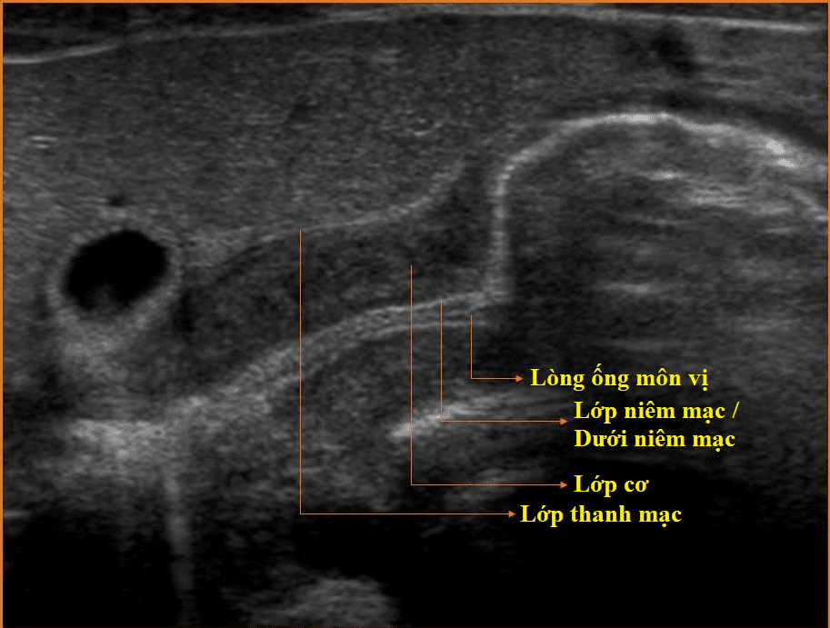

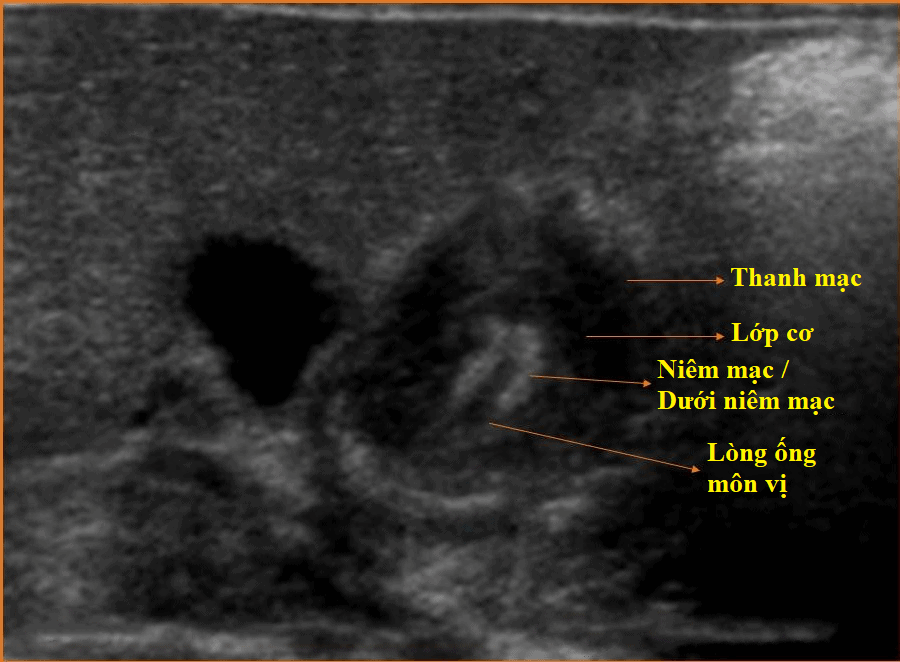

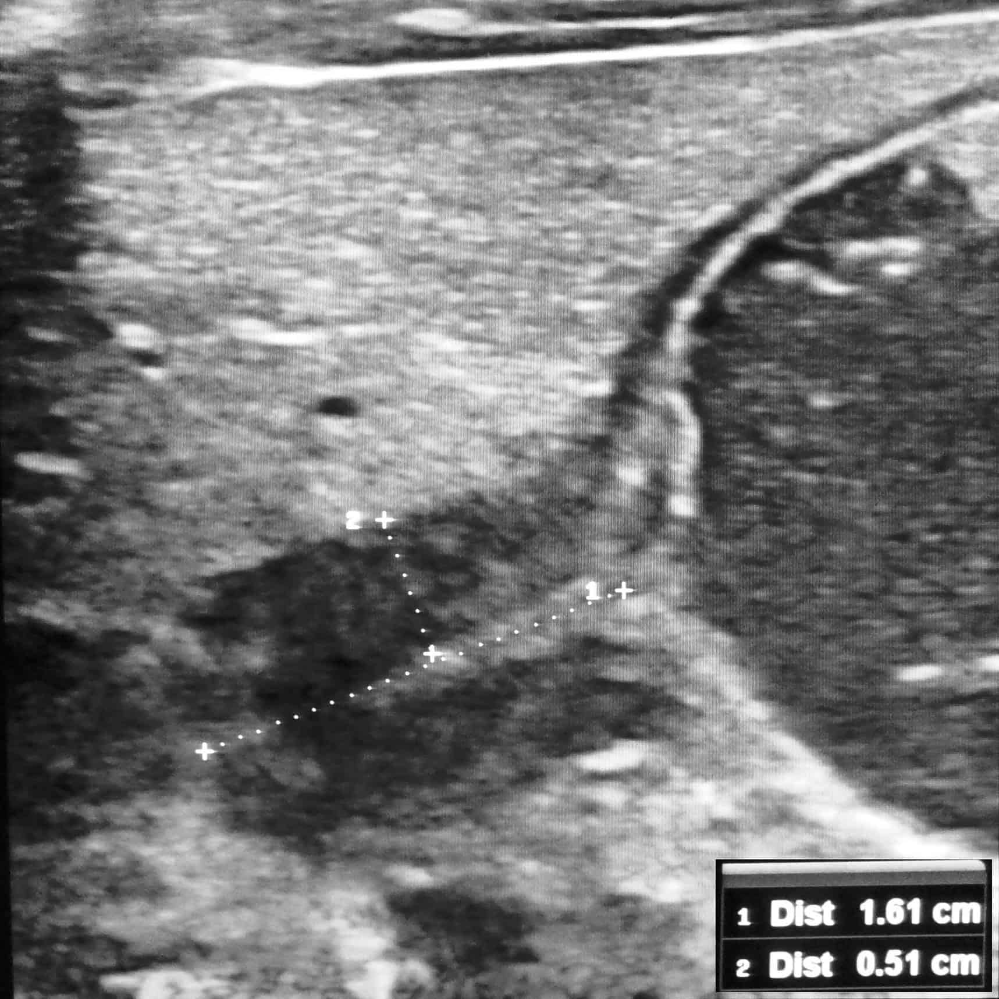

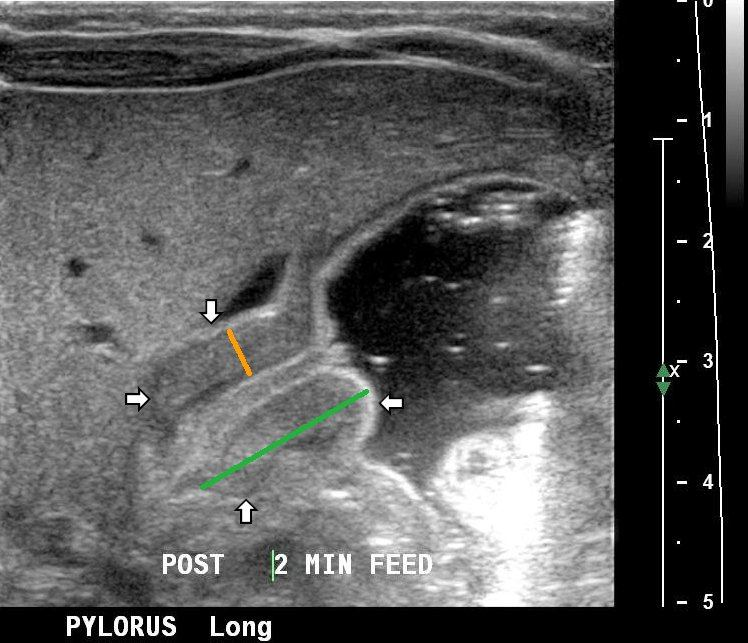

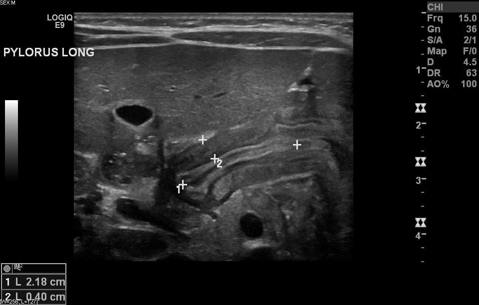

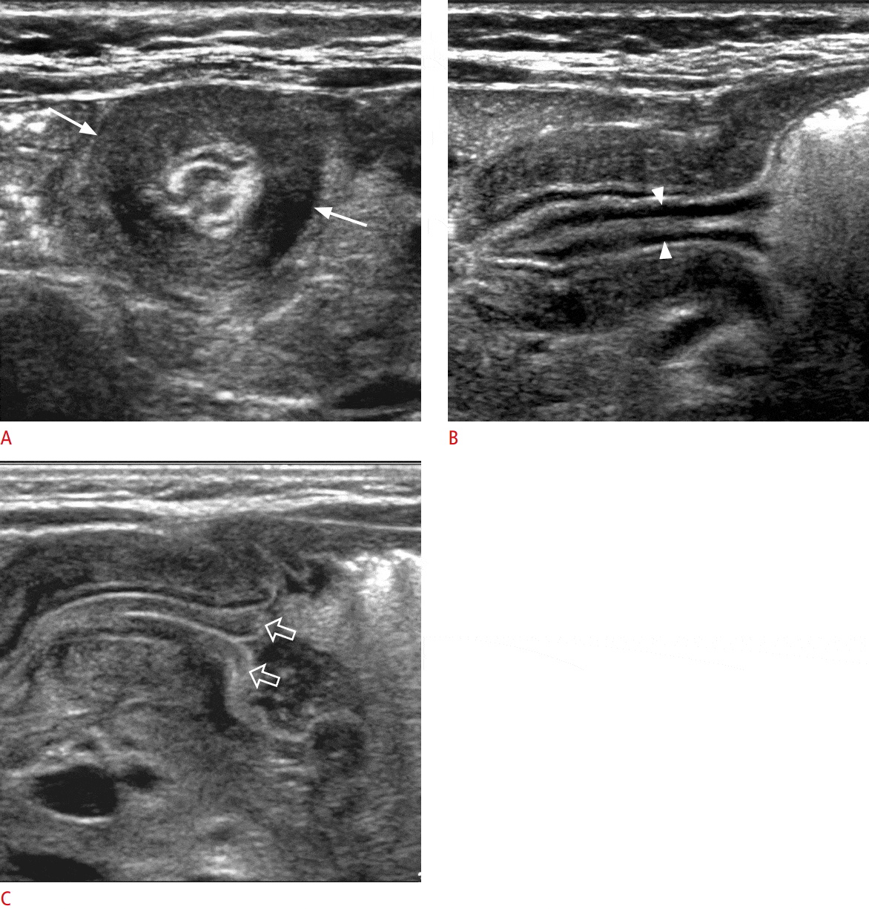

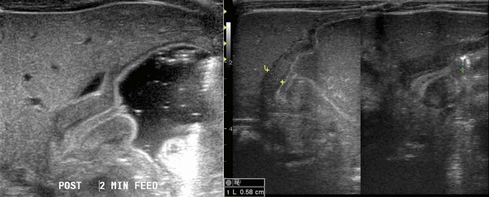

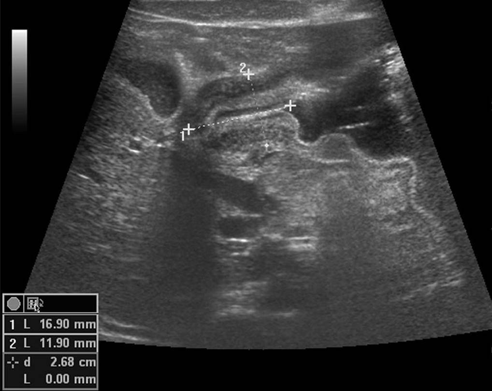

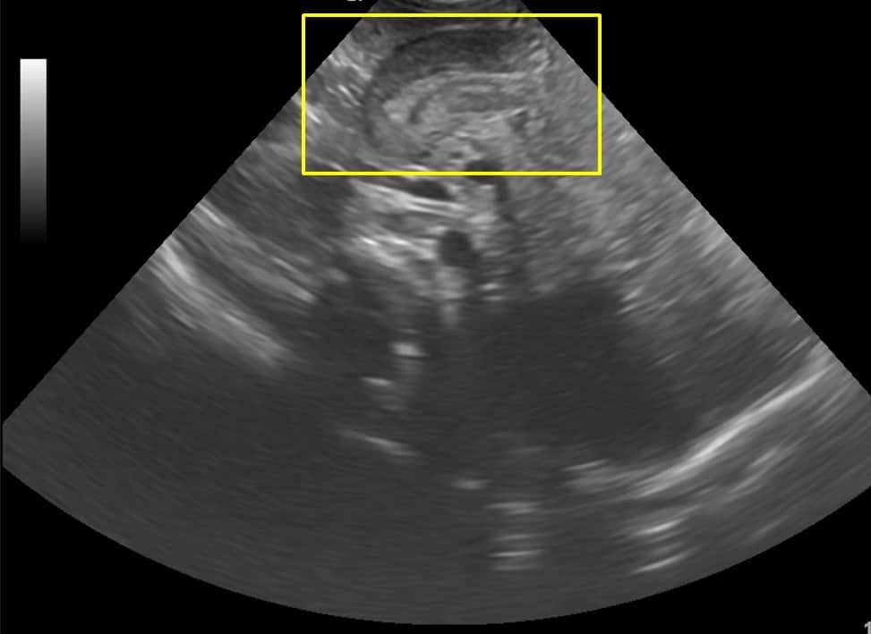

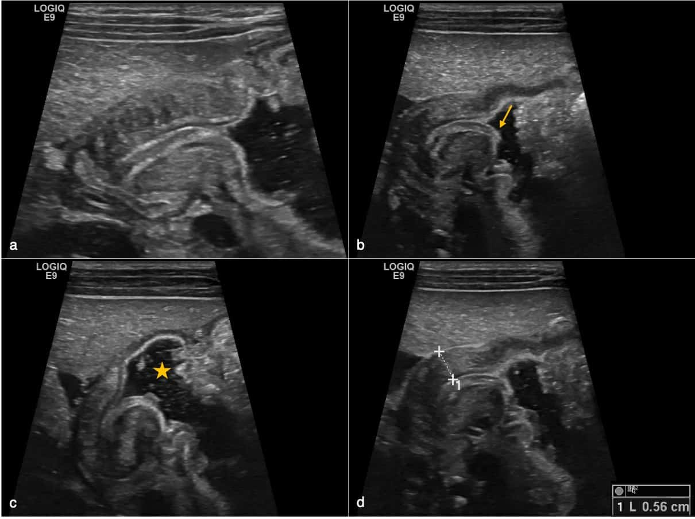

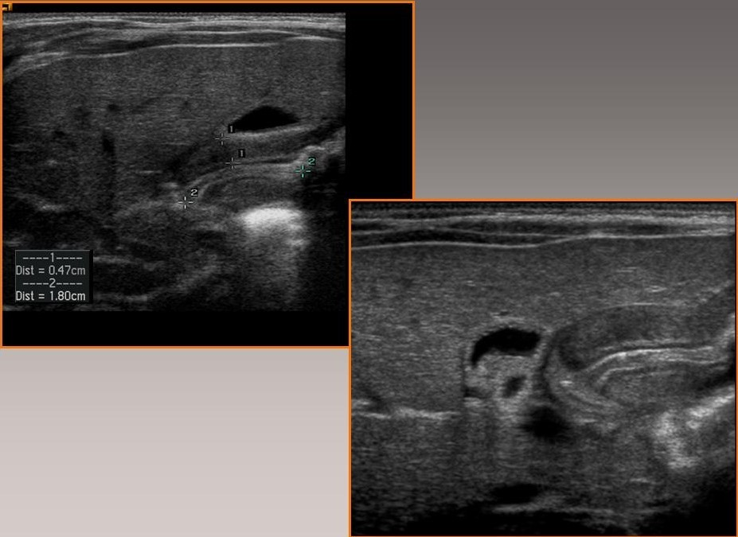

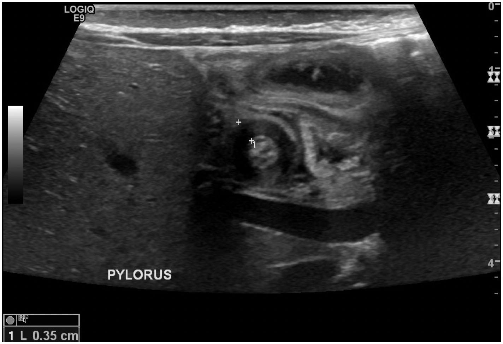

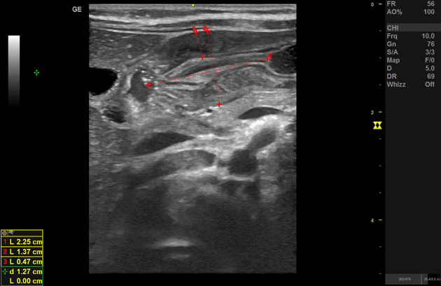
=> Case lâm sàng 0:


=> Case lâm sàng 1:


=> Case lâm sàng 2:


=> Case lâm sàng 3:


=> Case lâm sàng 4:


=> Case lâm sàng 5:


=> Case lâm sàng 6:


=> Case lâm sàng 7:


=> Case lâm sàng 8:


=> Case lâm sàng 9:


=> Case lâm sàng 10:


=> Case lâm sàng 11:


=> Case lâm sàng 12:


=> Case lâm sàng 13:


=> Case lâm sàng 14:


=> Case lâm sàng 15:


=> Case lâm sàng 16:
V. Chẩn đoán CLVT
– Đặc điểm hình ảnh cắt lớp vi tính hẹp phì đại môn vị ở trẻ nhỏ: Ít chỉ định thường quy do nhiễm xạ và siêu âm đã chẩn đoán xác định, chỉ chụp khi lâm sàng không điển hình hoặc cần loại trừ dị tật bẩm sinh phối hợp vùng tá tụy:
+ Dạ dày giãn lớn chứa nhiều dịch và thức ăn ứ đọng phía trên chỗ tắc, trong khi các quai ruột non phía dưới xẹp nhỏ ít khí.
+ Vùng ống môn vị kéo dài > 15–17 mm với thành cơ phì đại dày đồng tâm > 3 mm và đường kính ngang > 13 mm, tạo hình ảnh tương đồng dấu hiệu cổ tử cung trên mặt cắt đứng ngang hoặc đứng dọc và dấu hiệu hình bia trên mặt cắt ngang qua trục ống môn vị.
+ Lòng ống môn vị hẹp khít chỉ còn dải niêm mạc ngấm thuốc mỏng ở trung tâm bao quanh bởi lớp cơ phì đại giảm tỷ trọng tương đối, không ngấm thuốc bất thường dạng khối khu trú và không thâm nhiễm mỡ quanh môn vị.
– Đặc điểm hình ảnh cắt lớp vi tính hẹp môn vị ở người lớn: Là phương tiện hàng đầu giúp xác định vị trí tắc nghẽn, bản chất tổn thương và đánh giá giai đoạn bệnh lý:
+ Nguyên tắc kỹ thuật: Ưu tiên làm căng lòng dạ dày bằng nước (thuốc cản quang âm tính) kết hợp thuốc giãn cơ trơn trước khi tiêm thuốc cản quang tĩnh mạch đa thì (thì động mạch muộn và thì tĩnh mạch cửa), tránh dùng thuốc cản quang đường uống tỷ trọng cao vì che lấp lớp niêm mạc ngấm thuốc.
+ Hẹp lành tính do loét dạ dày – tá tràng xơ chai: Dày thành vùng hang môn vị hoặc hành tá tràng đồng tâm, đối xứng với bề dày thường < 10 mm, bảo tồn cấu trúc phân lớp thành ống tiêu hóa sau tiêm thuốc cản quang (lớp niêm mạc trong ngấm thuốc mạnh và lớp dưới niêm mạc phù nề giảm tỷ trọng), kèm biến dạng co kéo hành tá tràng, ổ loét đọng dịch hoặc khí và thâm nhiễm nhẹ lớp mỡ xung quanh.
+ Hẹp ác tính do ung thư biểu mô tuyến vùng hang môn vị: Dày thành dạ dày khu trú không đối xứng thường > 10 mm, bờ gồ ghề nham nhở, mất hoàn toàn cấu trúc phân lớp thành ống tiêu hóa, ngấm thuốc mạnh không đồng nhất kèm hạch to quanh dạ dày, thâm nhiễm mạc nối nhỏ, xâm lấn tụy hoặc di căn gan và phúc mạc.
+ Nguyên nhân cơ học lành tính khác: Sỏi mật lớn di chuyển qua đường rò mật – ruột gây kẹt hành tá tràng tạo hội chứng Bouveret (tam chứng Rigler gồm tắc ruột cơ học cao, sỏi mật lạc chỗ cản quang và khí trong đường mật), polyp lớn vùng hang vị sa vào ống môn vị, búi bã thức ăn (Bezoar) kẹt lỗ môn vị hoặc sẹo xơ dày thành lan tỏa sau bỏng hóa chất.
+ Chèn ép từ bên ngoài ống tiêu hóa: Khối u đầu tụy giảm tỷ trọng gây giãn đồng thời ống mật chủ và ống tụy chính (dấu hiệu ống đôi), u bóng Vater, ung thư đường mật đoạn thấp, viêm tụy mạn tạo nang giả tụy vùng đầu tụy hoặc khối hạch rốn gan – quanh tụy chèn ép hành tá tràng từ phía ngoài vào trong.
– Phân biệt: Trên cắt lớp vi tính, cần đối chiếu kỹ các tổn thương dễ gây nhầm lẫn vùng hang môn vị – tá tràng:
+ Co bóp sinh lý vùng hang vị: Gây dày thành khu trú tạm thời tạo dấu hiệu giả u vùng hang vị nhưng bề mặt thanh mạc trơn láng, bảo tồn lớp niêm mạc ngấm thuốc liên tục, không thâm nhiễm mỡ quanh dạ dày và thay đổi hình thái khi làm căng dạ dày bằng nước.
+ Loét xơ chai lành tính và ung thư hang môn vị thể thâm nhiễm: Cả hai đều gây dày thành chít hẹp lòng ống môn vị, nhưng ung thư làm mất ranh giới phân lớp thành dạ dày trên thì tĩnh mạch cửa và thường đi kèm hạch vùng có trục ngắn > 8–10 mm hoặc ngấm thuốc dạng hoại tử trung tâm.
=> Case lâm sàng 1:


=> Case lâm sàng 2:


Hình ảnh bệnh lý ↵
VI. Tiên lượng & Điều trị
* Tiên lượng
– Diễn tiến và yếu tố tiên lượng: Phụ thuộc vào căn nguyên lành tính hay ác tính, mức độ mất bù cơ học của dạ dày và tình trạng rối loạn nước – điện giải toàn thân (theo khuyến cáo thực hành lâm sàng của Hiệp hội Tiêu hóa Hoa Kỳ – AGA 2021 và Hội Nội soi Tiêu hóa Hoa Kỳ – ASGE 2021):
+ Ở trẻ nhũ nhi mắc hẹp phì đại môn vị, tiên lượng rất tốt sau khi điều chỉnh ổn định kiềm chuyển hóa giảm clo máu và mở cơ môn vị ngoài niêm mạc.
+ Ở người lớn hẹp môn vị lành tính do loét dạ dày – tá tràng, tiên lượng khả quan nếu can thiệp nong bóng qua nội soi kết hợp tiệt trừ vi khuẩn Helicobacter pylori và điều trị ức chế bài tiết acid trước khi dạ dày mất trương lực hoàn toàn.
+ Ở nhóm nguyên nhân ác tính (ung thư hang môn vị, ung thư đầu tụy), tiên lượng dè dặt do bệnh thường phát hiện ở giai đoạn tiến triển tại chỗ hoặc đã có di căn xa trên cắt lớp vi tính.
+ Các yếu tố tiên lượng nặng trên hình ảnh gồm dạ dày giãn cực đại hình đáy chậu mất hoàn toàn nhu động, kèm biến chứng viêm phổi hít, thủng ổ loét hoặc hoại tử thiếu máu thành dạ dày do tăng áp lực nội lòng kéo dài.
* Nguyên tắc điều trị
– Chiến lược xử trí: Luôn ưu tiên hồi sức nội khoa ổn định toàn thân và giải áp dạ dày trước khi thực hiện thủ thuật can thiệp hoặc phẫu thuật giải phóng tắc nghẽn (theo hướng dẫn của ASGE 2021 và ESGE 2020):
+ Hồi sức ban đầu: Đặt ống thông mũi – dạ dày hút rửa dịch ứ đọng và thức ăn cũ, bù dịch đẳng trương, điều chỉnh hạ kali máu và kiềm chuyển hóa giảm clo máu trước mọi can thiệp xâm lấn.
+ Hẹp phì đại môn vị ở trẻ nhũ nhi: Phẫu thuật mở cơ môn vị ngoài niêm mạc (phẫu thuật Fredet-Ramstedt) qua nội soi ổ bụng hoặc mổ mở là phương pháp điều trị triệt để tiêu chuẩn sau khi điện giải đồ trở về bình thường.
+ Hẹp môn vị lành tính ở người lớn: Điều trị nội khoa ức chế bơm proton liều cao nếu hẹp cơ năng do phù nề viêm cấp tính; nong bóng qua nội soi nhiều đợt là lựa chọn đầu tay cho hẹp xơ chai ngắn (< 2 cm), chỉ định phẫu thuật cắt hang vị hoặc nối vị – tràng khi thất bại sau nong hoặc nghi ngờ ác tính.
+ Hẹp môn vị ác tính ở người lớn: Phẫu thuật cắt khối u triệt căn kết hợp nạo vét hạch nếu còn khả năng phẫu thuật; trường hợp giai đoạn muộn không còn chỉ định cắt bỏ, ưu tiên đặt giá đỡ kim loại tự bung qua nội soi (SEMS) hoặc tạo hình nối vị – tràng dưới hướng dẫn siêu âm nội soi (EUS-GE) thay cho phẫu thuật nối tắt kinh điển.
* Vai trò CĐHA
– Hỗ trợ lập kế hoạch, theo dõi đáp ứng và phát hiện biến chứng: Giữ vai trò xuyên suốt từ đánh giá trước can thiệp đến theo dõi sau điều trị:
+ Trước can thiệp: Cắt lớp vi tính đa dãy xác định chiều dài đoạn hẹp, bản chất lành tính hay ác tính, đánh giá giai đoạn TNM và phát hiện chống chỉ định đặt giá đỡ nội soi như tắc ruột nhiều tầng phía hạ lưu hoặc thủng tạng rỗng.
+ Đánh giá đáp ứng sau điều trị: Ở trẻ nhũ nhi sau phẫu thuật mở cơ môn vị, lớp cơ phì đại cần khoảng 3–6 tháng mới thoái triển về kích thước bình thường trên siêu âm nên không dùng bề dày cơ để đánh giá thất bại sớm trong những tuần đầu; ở người lớn sau nong bóng hoặc đặt giá đỡ, chụp X-quang lưu thông đường tiêu hóa trên bằng thuốc cản quang tan trong nước đánh giá sự tái lập lưu thông và vị trí bung của giá đỡ.
+ Phát hiện biến chứng sau can thiệp: Cắt lớp vi tính bụng có uống thuốc cản quang tan trong nước là phương tiện nhạy nhất để chẩn đoán sớm biến chứng thủng niêm mạc sau nong bóng hoặc rò miệng nối (khí tự do ổ bụng, tụ dịch quanh tá tràng, thoát thuốc cản quang ra ngoài lòng ống tiêu hóa), cũng như phát hiện tắc lại giá đỡ do u phát triển xuyên mắt lưới hoặc di lệch giá đỡ.
Tài liệu tham khảo
* Infantile Hypertrophic Pyloric Stenosis – Marta Hernanz-Schulman, MD
* Hypertrophic Pyloric Stenosis – everything a radiologist needs to know – J. C. Ruivo Rodrigues, B. Rodrigues, C. F. R. C. Ribeiro
* Value of combined pyloric muscle thickness and antropyloric distensibility in ultrasound diagnosis of hypertrophic pyloric stenosis – C. Valle, P. A. Bonaffini, G. C. Preziosa, M. Pace
* Practical approach to hypertrophic pyloric stenosis: technical considerations, imaging features and diagnostic pitfalls – C. Valle, P. A. Bonaffini, A. Barletta, G. C. Preziosa
* Infantile Hypertrophic Stenosis of the Pylorus: Tips and tricks for Radiology Residents – J. H. del Riego Ferrari, C. Serrano Burgos
* Ultrasound (US) examination of the pylorus in children – S. Cacaci, R. Inchingolo, V. Martinelli
* Role of upper GI series in children – L. Mohamed Rawash, M. Hatem Shalaby
* Hypertrophic pyloric stenosis: tips and tricks for ultrasound diagnosis – Sílvia Costa Dias, Sophie Swinson, Helena Torrão
* Pyloric stenosis: role of imaging – Marta Hernanz-Schulman
* Hypertrophic pyloric stenosis: tips and tricks for ultrasound diagnosis – Sílvia Costa Dias, Sophie Swinson, Helena Torrão